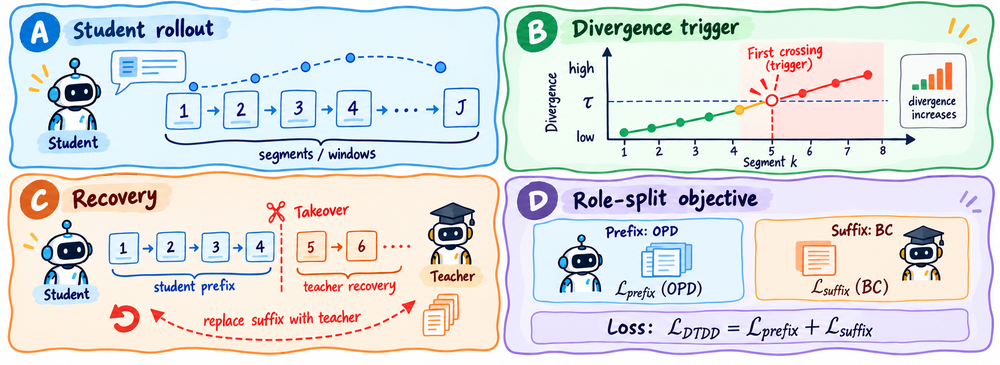
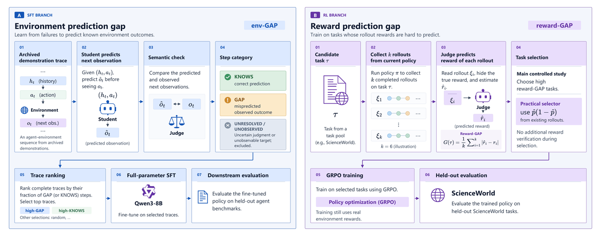
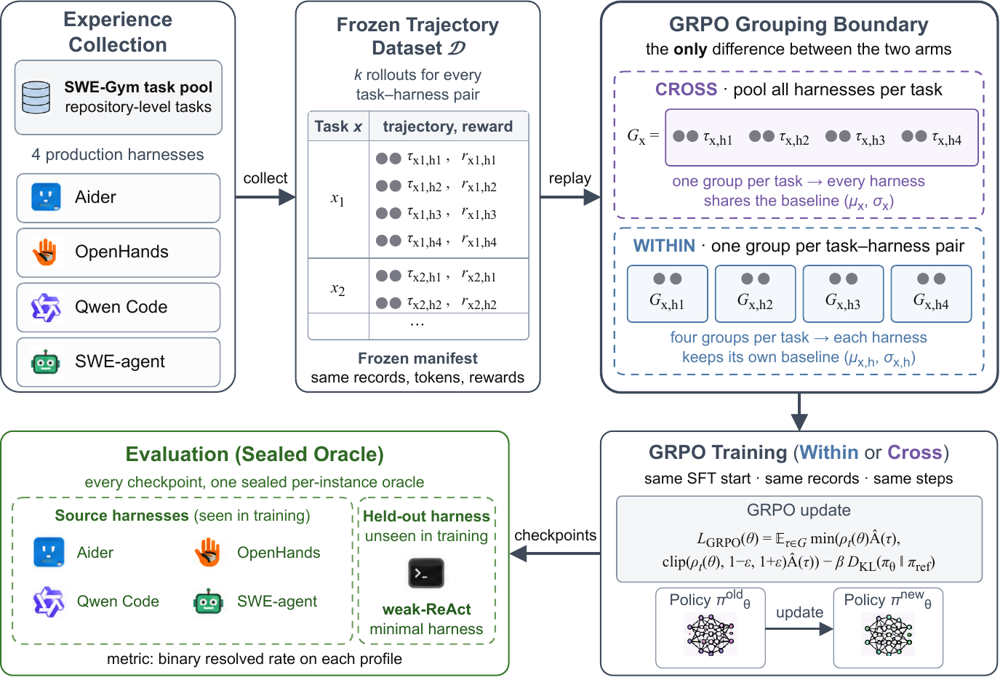
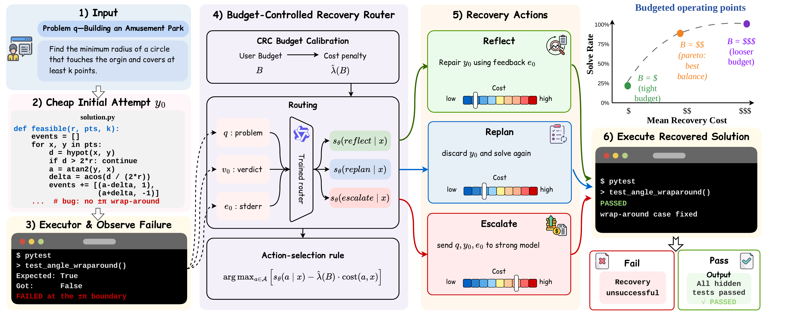
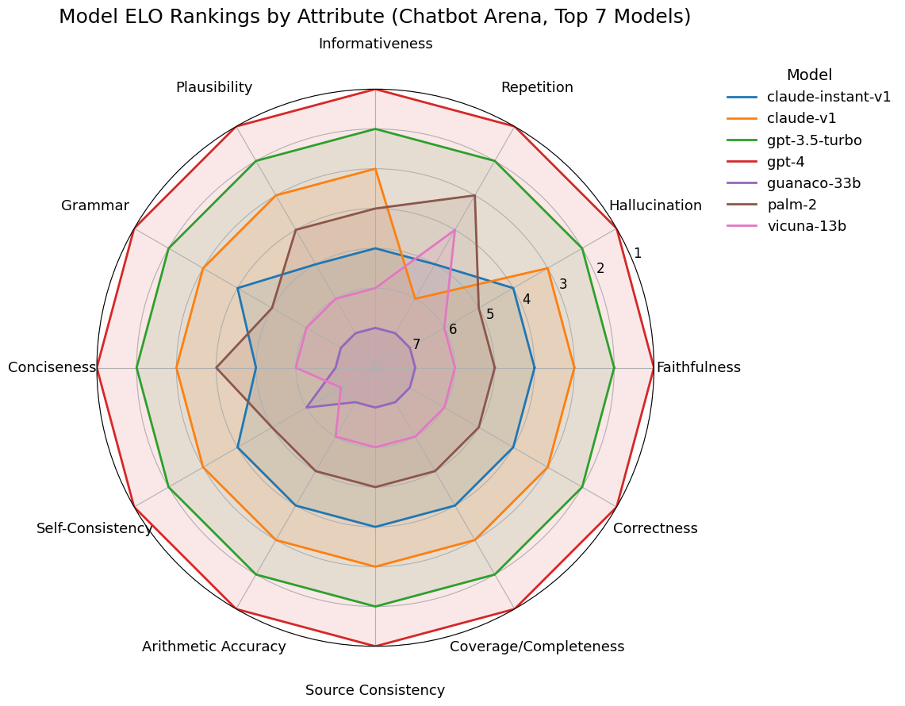
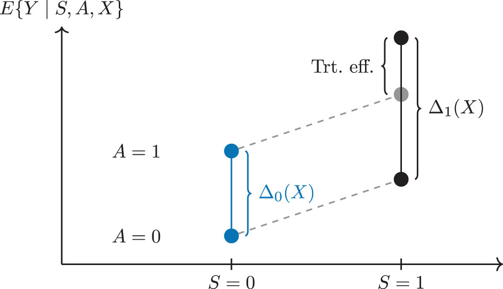

|
|
Qijia He
I am a final-year PhD student in the Department of Statistics at the University of Washington, advised by Prof. Bo Zhang. I collaborate with Prof. Ranjay Krishna at the UW CSE RAIVN Lab on multimodal AI research. Before graduate school, I received my B.S. in Statistics from Sun Yat-sen University. I have also interned at Google, TikTok and Apple.
I build LLM & VLM agents through post-training: on-policy distillation, reinforcement learning (GRPO), and capability-aware data selection. My research focuses on stable, sample-efficient training for long-horizon, multi-turn agents, reliable coding agents with adaptive failure recovery and cost-aware model routing, and multimodal code generation such as figure-to-SVG.
I am currently seeking full-time industry opportunities starting in 2027. Please feel free to reach out for any relevant opportunities!
Contact me: heqj3@uw.edu
|
LLM / VLM
 |
DTDD: Divergence-Triggered Dynamic Distillation for Reliable On-Policy Supervision
Qijia He, Zequn Li, Spencer Luo, Tianle Chen, Pradyumna Narayana, Zixian Ma, Ranjay Krishna, Lan Nie, Sugato Basu
Preprint, 2026
When a student trajectory drifts too far from the teacher, on-policy distillation becomes unstable. DTDD detects the drift via segment-level divergence and hands off to teacher recovery. Across long-reasoning math, base-model distillation, and ALFWorld agents, it cuts the peak gradient norm from 12.0 to 1.4, reaches OPD-level accuracy in about 2.5× fewer updates, and raises success from 76.5% to 81.3%.
|
 |
Agent Capability Shapes the Value of Post-Training Data
Jiayi Cheng, Yunshu Wu, Chenqian Le, Qijia He, Runhao Li, Michael Yue, Xupeng Chen, Michal Mankowski
Preprint, 2026
Which experiences should an agent learn from? We select post-training data by the agent's own prediction gaps: for SFT, traces whose execution outcomes the agent mispredicts yield 12.8% higher mean reward than random selection; for RL, tasks whose rollout rewards it mispredicts improve final reward by 33.3%, and cheap predicted-reward proxies work without extra verification.
|
 |
What Does Multi-Harness RL Learn? Credit Assignment and Portability in Coding Agents
Chenqian Le, Jiayi Cheng, Qijia He, Runhao Li, Yinghao Li, Xupeng Chen
Preprint, 2026
[Paper]
Multi-harness RL for coding agents both trains across several harnesses and compares their rewards inside one GRPO group. Replaying identical Qwen3-8B trajectories from Aider, OpenHands, Qwen Code, and SWE-agent under per-harness vs. cross-harness grouping, we find the evaluation harness moves SWE-bench Verified solve rate by 4.3×, while the grouping rule has no detectable effect on an unseen held-out harness.
|
 |
VFIG: Vectorizing Complex Figures in SVG with Vision-Language Models
Qijia He, Xunmei Liu, Hammaad Memon, Ziang Li, Zixian Ma, Jaemin Cho, Zhongzheng Ren, Dan Weld, Ranjay Krishna
NeurIPS 2026 (Evaluations & Datasets Track)
[Paper]
[Project Page]
[Code]
VFIG is the first large-scale ecosystem for scientific figure-to-SVG generation, introducing a 66K figure–SVG dataset, a new benchmark, and a family of VLMs trained with SFT+RL that achieve state-of-the-art open-source performance and parity with GPT-5.2.
|
 |
ARCHER: Adaptive Recovery Routing with Conformal-risk Calibration for Coding Agents
Qijia He, Jiayi Cheng, Chenqian Le, Rui Wang, Xunmei Liu, Yixian Chen, Jie Mei, Zhihao Wang, Xupeng Chen, Yuhuan Chen, Tao Wang
Efficient Reasoning @ COLM 2026 Spotlight
[Paper]
[Code]
When a coding agent fails, should it attempt cheap recovery or escalate to a stronger model? ARCHER casts this as a routing problem over heterogeneous recovery actions trained on execution rollouts, with a conformal risk control layer that adapts to any budget without retraining—exceeding always-escalate solve rates at 35% of its recovery cost.
|
 |
Rethinking Human Preference Evaluation of LLM Rationales
Ziang Li, Manasi Ganti, Zixian Ma, Helena Vasconcelos, Qijia He, Ranjay Krishna
XLLM-Reason-Plan @ COLM 2025 Best Paper Award (Honorable Mention)
[Paper]
Large language models (LLMs) generate rationales that improve reasoning and interpretability, but existing evaluations using binary human or LLM preferences are limited and opaque. We introduce an attribute-based evaluation framework that defines key rationale qualities, explains human preferences, and enables more nuanced model comparisons through attribute-specific analysis.
|
Causal Inference
 |
Role of placebo samples in observational studies
Ting Ye, Qijia He, Shuxiao Chen, Bo Zhang
Journal of Causal Inference, 2025
[Paper]
[Supplement]
We proposed a framework for using placebo samples in observational studies to detect and correct for unmeasured confounding bias. It develops identification assumptions and estimation methods—including regression, weighting, and doubly robust approaches—and validates them through simulations and an applied case study on tax credits and infant health.
|
|
|
Software Engineer Intern (PhD), Summer 2026
Google, New York, NY
Research on on-policy distillation in LLMs
|
|
Machine Learning Intern, Spring 2026
TikTok, Bellevue, WA
Worked on agentic AI systems for e-commerce applications
|
 |
Machine Learning Intern, Summer 2025
Apple, Cupertino, CA
Worked on causal machine learning methods for ads marketplace
|
|
Department of Statistics, University of Washington
- STAT 311 Elements of Statistical Methods (Winter 2024, Autumn 2025)
- STAT 513 Statistical Inference (Winter 2026)
- STAT 435 Introduction to Statistical Machine Learning (Spring 2026)
|
|
Academic tutoring center, School of Mathematics, Sun Yat-sen University
Tutor in Mathematical analysis (Fall 2018)
|
|
TAL Education Group
Teaching Assistant in primary-school Olympiad Mathematics (2017-2018)
- Rated S (top 5% performance)
|
|